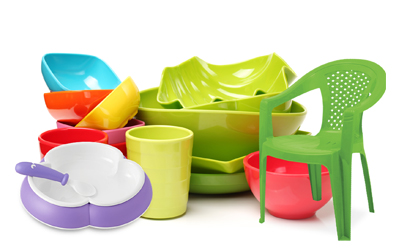
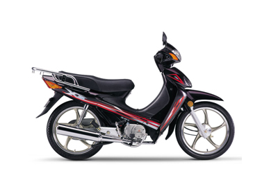

AUTOMOBILES
Manufacturing

Bright Vehicle Manufacturing introduces automotive products from China, Japan and Germany. Our product line includes heavy duty vehicles, middle and high level buses, special environment friendly vehicles. The company carries out optimization design and assembly according to African road condition so as produce suitable products at affordable prices.
PLASTICS
Manufacturing

Bright Technical & Industrial Co. Ltd manufactures high quality household and industrial plastics, health & safety accessories, storage containers, fixtures & fittings, electrical components & accessories. Plastic products manufactured include; plastic chairs, tables, trays, plates, spoons, cups, jerry cans of different sizes and many other allied products.
MOTORCYCLE
Manufacturing

Bright Motor Manufactures motorcycles, tri-cycles, spare parts and accessories. We pioneered the first Made-in-Nigeria Motorcycle brand that sold for as low as N60,000. By year 2002, we successfully drove out tokunbo (foreign used) motorcycles out of Nigeria forever!
TYRES&TUBES
Manufacturing
General Tyres & Tubes Co. Ltd Enugu, manufacturers of high quality tyres & Tubes. The plant has a production capacity of about 8,000 pieces of motorcycle tyres daily and 13,000 tubes daily.